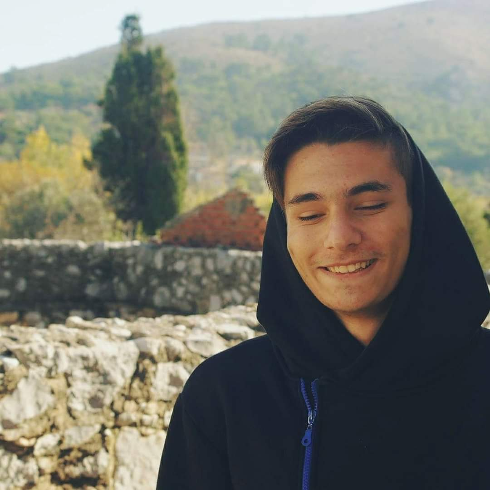

// IT SUPPORT · WINDOWS · ACTIVE DIRECTORY Marios Platon
IT Support Technician — L1/L2 Helpdesk
Contact ↗ View / Save CV ↗ PROFILE / IT OPERATIONS MARIOS.P // 2026
CURRENT ROLE IT HELPDESK L1 / L2
CORE SUPPORT WINDOWS Troubleshooting
USER ADMINISTRATION AD User administration

01 / INTRODUCTION About me Professional experience in end-user support, Windows troubleshooting and Active Directory user administration. I combine practical technical support with customer service experience and a commitment to learning infrastructure technologies.
02 / CAREER Professional Experience Professional experience in technical support and customer service.
CQS-PALADINO IT Support Technician — Level 1 & 2 Helpdesk June 2025 – Present Troubleshoot hardware, software, network and peripheral issues for users and agents. Install and configure Windows workstations. Create and manage users in Active Directory and Microsoft 365 Admin Center. Perform basic VM operations in VMware vSphere, including powering on and restarting VMs. Resolve application, driver and printer issues. Elpedison (via Befon) Customer Service Representative January 2025 – June 2025 Handled inbound residential and business enquiries about electricity and natural gas. Logged and tracked customer requests in Salesforce CRM while following GDPR policies. Worked toward customer service KPIs for handling time, satisfaction and resolution effectiveness. Family business Kiosk Operations & Customer Service May 2024 – January 2025 Handled customer service, cash transactions and inventory tracking. Organized daily operations and improved internal processes. Vodafone Sales Representative September 2023 – December 2023 Promoted telecommunications products and services and built customer relationships. Handled complaints and offered solutions to improve customer satisfaction. 03 / VOLUNTEERING Volunteer Experience 04 / SKILLS Technical Skills Technologies and tools from my professional experience, education and personal home lab.
Independent Windows troubleshooting Active Directory WordPress / WooCommerce
Foundational Microsoft 365 Admin Center VMware vSphere (VM power on / restart) Proxmox VE Linux CLI HTML / CSS / JavaScript
Guided practice TCP/IP, DNS, DHCP Python / C# SQL / databases
05 / QUALIFICATIONS Certifications & Education Cisco Networking Essentials Cisco Endpoint Security ECDL Advanced
IT Applications Technician — IEK Delta 360, Patras
Merchant Marine Academy — Oinousses, Chios
English C1 · French B1
06 / SELECTED WORK Projects 01 Global Game Jam - Unity Game Collaborative Unity game development at Global Game Jam 2024, with practical experience in teamwork and rapid prototyping.
View project → 07 / HOME LAB Self-hosted Home Lab A personal Proxmox learning environment exploring self-hosting and infrastructure through AI-assisted configuration and deployment.
Virtualization & Storage Proxmox VE for virtual machines and TrueNAS for network-attached storage.
DNS & Monitoring Pi-hole for network-wide DNS filtering and Uptime Kuma for service availability monitoring.
Self-hosted Communication Matrix/Synapse with Element, accessible through Cloudflare Tunnel.
Explore the full Home Lab case study →
08 / INTERACTIVE Portfolio terminal Explore my CV using commands or select a shortcut.
whoami experience skills volunteer homelab certifications projects cv contact help
 01
01